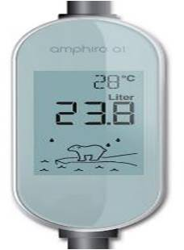
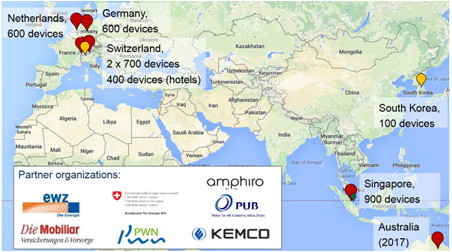

Shower Feedback in Switzerland
The Shower Feedback program provides households with real-time feedback on one specific, energy-intensive behaviour: showering. Participants receive smart shower meters that display feedback on the individual’s energy and water consumption in the shower in real time. On average, participants cut their shower time by an average of roughly 20%, which reduced related water and energy consumption by about the same amount. This program was designated a Tools of Change Landmark case study in 2016.
Background
Note: To minimize site maintenance costs, all case studies on this site are written in the past tense, even if they are ongoing as is the case with this particular program.
In Switzerland, in 2012, water heating was the second largest residential energy end use (after space heating), and showering accounted for more than 80% of hot water demand. Other feedback programs, which provided information about one's own or other people's behaviour, had not focused on hot water conservation in general, and shower behaviour in particular, where the majority of hot water was consumed.
The Shower Feedback pilot program was designed to promote showering behaviour that reduced energy and water use by providing engaging, non-judgmental feedback. Using smart shower meters, the program gave people real-time information on energy and water consumption.
Getting Informed
ETH Zurich reviewed other feedback programs, to understand the barriers, benefits, and drawbacks, and determine what lessons could be applied in future energy conservation programs. It found that individuals:
- Had a poor understanding of how much energy and water they used
- Had comfort concerns over low-flow showerheads
- Were often not very responsive to price increases for electricity because it was usually a small part of their budget.
ETH Zurich found that most feedback programs consisted of monthly or quarterly reports that were mailed to households, leading to substantial time lags in collecting data. While these types of interventions did influence consumer behaviour on a large scale, programs worked best when feedback was delivered frequently, in a timely and clear manner, and when it focused on specific actions.
It also found that programs that required or encouraged a specific conservation goal, or ones that provided an overwhelming number of energy reduction tips, were less effective than programs that simply provided real-time feedback.
The ewz-Amphiro-study was carried out under the lead of researchers of ETH Zurich's Department of Management, Technology, and Economics, in close collaboration with ewz, researchers from the University of Lausanne's Faculty of Business and Economics, and the ETH Zurich spin-off company Amphiro AG.
Delivering the Program
In 2012, ETH Zurich recruited 697 households from the utility company, ewz. Participants were chosen from a larger sample of 5,000 customers who had previously completed the ewz Study on Smart Metering.
A survey was first conducted to characterize the sample population. It included questions about environmental attitudes and habits.
"It was an opt-in program," explained Dr. Verena Tiefenbeck, Department of Computer Science, Bits to Energy lab, ETH Zurich. (Obtaining a Commitment) "We limited the program to one- and two-person households because, back in 2012, the devices had a smaller memory and we were afraid they might not be able to store all the shower data for the entire study."
Since all of the households chosen had already participated in a previous smart metering study, they received the smart shower meter as a 'thank you' gift.
The households then installed the devices. "It was very simple to install in any shower with a handheld showerhead, which most people have in Switzerland," said Tiefenbeck. "You could do it without any tools." The shower meter hung at eye level, providing easy to read information. (Prompts, Overcoming Specific Barriers)

The devices were simple to install at home.
During the baseline period (first ten showers), all of the shower meters displayed water temperature only. Post-baseline, the three device versions displayed different feedback content.
For both treatment groups, the shower meter displayed the current water temperature, and how much water and energy had been used since the water was turned on. One of the treatment groups was also given information on the previous shower. Meters used by the control group displayed only water temperature throughout the two-month study (to indicate that the device was working), but did not receive feedback on resource consumption. All data were stored on the devices.

For both treatment groups, the shower meter displayed the current water temperature, how much water and energy had been used since the water was turned on, and a short animation of a polar bear standing on an ice flow.
One of the treatment groups also got additional information on energy efficiency ratings. In Europe, equipment energy efficiency is rated A through G. "When they started their shower, they usually started out in energy efficiency class A+ and then, as the shower took longer, they moved towards B, then C and so on," said Tiefenbeck. (Feedback)
In both treatment groups, meters also showed a short animation of a polar bear standing on an ice flow. "It might have been more controversial in other countries but most people responded positively," said Tiefenbeck. "If you took a really long shower, the ice flow shrank and eventually the animation would disappear." (Vivid Communications)
By targeting showering as a single activity, ETH Zurich was able to provide concrete and actionable information on that activity. "We provided the information in real time so that people saw that feedback as they took their showers, while they could still do something about it," said Tiefenbeck. (Building Motivation Over Time)
Financing the Program
The Swiss Federal Office of Energy supported the research activities of this study, while ewz funded the study devices.
Measuring Achievements
ETH Zurich recruited 697 households from a larger sample of 5,000 customers who had previously opted-in to complete the ewz Study on Smart Metering. To verify if these opt-in customers might be more environmentally concerned than an average customer, ETH Zurich surveyed participants before and after the study and compared their environmental attitudes with a representative group from Switzerland.
Households were randomly assigned to three experimental conditions—two treatment groups and one control group—each of which received a different version of the smart shower meter.
During the baseline period (first ten showers), all of the shower meters displayed water temperature only. Post-baseline, the three device versions displayed different feedback content.
"We assigned households to different groups randomly and compared how the different groups did, over time," said Tiefenbeck. "For the first 10 showers, people in all three groups only saw water temperature. They didn’t get any feedback, yet, on energy or water consumption."
After the tenth shower, ETH Zurich began the intervention phase. Two-thirds of the households saw how much energy and water they were using in their current showers (both treatment groups); one-third continued to see only water temperature (control group). This enabled the researchers to tell what changes were driven by seasonal factors and which were driven by the feedback itself.
The device doesn’t need a battery; from the water flow it harvests the energy needed to power the screen and on-board computer.
The meters were water-powered. "From the water flow, the meter harvested the energy needed to power the screen and on-board computer," Tiefenbeck explained. "You could use it for years without having to replace any batteries. It also meant that as soon as you turned on the water, the screen automatically activated ... people don’t need to press a button. It is there every time they take a shower." (Overcoming Specific Barriers, Prompts)

The devices were powered by water so they were always on when people took their showers.
"Data collection was the most cumbersome part of the study because back then we had to ask the participants to ship back the devices to us after the study so that we could read the data," said Tiefenbeck. "The new generation of devices can now transfer the data to the participant’s smartphone via Bluetooth connection. From there, it is easy to send to us."

The new generation of devices can now transfer the data to the participant’s smartphone via Bluetooth connection.
The study collected survey data (before and after the intervention), and resource consumption measurements in the shower. The meters stored data from every shower taken throughout the two-month study period.
At the end of the study, participants shipped their devices back (postage paid) for the data readout and to complete the final survey.
Almost all participants (98.3%) shipped their devices back and 636 of the devices (95.5%) were read successfully. The resulting dataset was 45,664 showers. Nearly as many households (666, or 95.5%) filled out the final survey. In all, 626 households (90%) provided all of the required information.
The individual datasets were merged, anonymized, analyzed, and prepared for dissemination in peer-reviewed journals, international conferences, and local workshops.
The first shower taken by each household was excluded from the study, because preliminary analysis of the data found that these first showers deviated significantly from typical patterns for temperature and volume.
"A rather large fraction of participants simply turned on the water after the installation of the device to check its functionality and display content, without taking an actual shower," Tiefenbeck explained.
Regression analysis showed little difference in shower energy use at baseline between the three groups. This indicated that the sample had been successfully randomized.
Outside temperatures remained relatively stable throughout the study period and there was no particular trend (up or down) that might have explained a drift towards higher or lower water consumption or temperature over time. The treatment groups’ energy and water consumption was compared to the control group to adjust for seasonal effects and ensure internal validity of the study.
Since the meters measured and stored water consumption and average water temperature, the minimum amount of energy was calculated by multiplying the amount of water used with the temperature gradient. The difference between the cold-water temperature and the average shower temperature was the minimum temperature.
"Essentially, that gave us the energy consumption if the heating system was 100% efficient," explained Tiefenbeck. "To calculate realistic values we asked the participants what kind of heating system they had and we took average values on a country level. In Switzerland, we knew exactly what percent of households used gas, electricity, or oil to heat their water and the average efficiency for each of these fuel sources. We plugged those numbers into the calculation of the actual, average energy being consumed per shower."
Results
ETH Zurich found that participants barely adjusted the flow rate or the water temperature once they received feedback. Instead, they cut their shower time by an average of roughly 20%, which reduced water consumption by 21%.

Relative to the control group, both treatment groups reduced energy consumption in the shower by 22%, a yearly savings of 452 kWh for the average 2.1-person household. As noted earlier, participants came from the same pool of households that had previously taken part in an electricity smart metering study. In that program, participants had reduced electricity use by only 86 kWh per year, one fifth as much as in the shower intervention.
In addition to its direct impact on behaviour, real-time consumption feedback also appeared to substantially increase knowledge about resource consumption.
"Information on shower energy and water use among the general population was not readily available," said Tiefenbeck. "In fact, this study is one of the first ones to quantify that in detail. But the results show that the intervention was particularly effective for participants with a high baseline level of water consumption."
For an average household, the device paid for itself within nine months from savings on the energy and water bill. For the case of a large-scale rollout by a utility company, there was a negative abatement cost of $234 (USD) per ton of CO2 abated. Furthermore, by targeting households with above-average baseline consumption, ETH Zurich believed that the treatment effect could be doubled to further raise the cost-effectiveness of future deployments.
"Our fixed-effects model does not indicate any evidence of a weakening of the effect size over the two-month study period," said Tiefenbeck. She also noted that other studies with the same devices and longer time spans (usually 3-6 months) showed similar results.
One 16-month study with 50 households in Singapore indicated that the effects were still stable in the longer run. The impact evaluations also showed that the savings were not driven by a small group of environmentalists; the net conservation effect was independent of environmental attitudes.
"We have replicated the studies in The Netherlands, Germany, Switzerland, and Singapore," said Tiefenbeck. "Across countries and different cultural settings, the effects were almost always as large as in the first study. That gave us reassurance that this would work in very different settings."

If the savings observed in the study were applied to all of the 40,000 Swiss households that were given the devices, annual energy savings would be about 80 gigawatt hours, and annual water savings would be almost 300 million litres.
In terms of public acceptance, "The response we have had has been quite positive," said Tiefenbeck. "You may say that those who opted-in might be particularly receptive, but we have run the study now in nine hotels in Switzerland and in Germany. There, we did not have opt-in participants. People just came to the hotel room and the device was there. Yet, even in these situations, the savings were almost as large as in households, and the vast majority of people really liked having the devices."
Contacts
Dr. Verena Tiefenbeck
Department of Computer Science
ETH Zurich
vtiefenbeck@ethz.ch
Notes
Lessons learned
Focused interventions
This study focused on a single behaviour, showering. "The study shows that this narrow focus on a specific activity can have a much larger impact than a typical smart-metering program," said Tiefenbeck.
Have a control group
In the first showers, the control group (the people who only saw water temperature throughout the entire study) slightly increased their consumption at first. The same was true for the treatment groups.
"We think that’s because participants at the beginning of the study knew they were being observed. After a while, their behaviour stabilized at what we think was their usual behaviour, whereas at the beginning they took shorter showers," said Tiefenbeck. "This highlights that it’s really important to have a control group."
Specific conservation goals don't always work
In follow-up studies in other jurisdictions, ETH Zurich gave participants a specific conservation goal, i.e., so many litres of water or a certain amount of energy to reduce.
"A lot of people do respond quite well to these savings goals, but it can also create some negative reactions," said Tiefenbeck. She explained that, for example, some people balked at being told what to do. In addition, people who washed their hair one day and not the next would need to use different amounts of water on different days.
"It’s hard to come up with a particular number, and most participants came up with their goals on their own," she said. "We asked people after this study if they had set a goal for themselves and the vast majority of them did that automatically."
Landmark Designation
The panel that designated this case study consisted of:
- Arien Korteland from BC Hydro
- Doug McKenzie-Mohr of McKenzie-Mohr Associates
- Brian Smith from the Pacific Gas and Electric Company
- Marsha Walton from the New York State Energy, Research and Development Authority
- Dan York of ACEEE
This case study was wrtitten in 2018 by Jay Kassirer and Sharon Boddy.